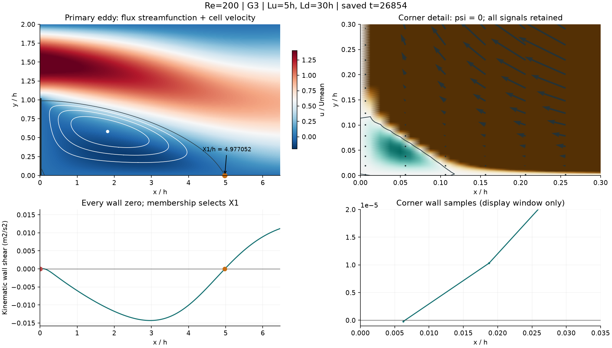
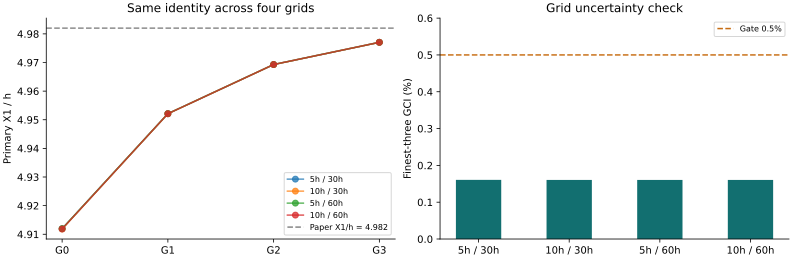

COMACBENCH / CFD / PRIMARY RECIRCULATION v2
16 组主涡身份复核通过
同一批 Re=200 原生场，使用论文中的主回流区 X₁ 定义重新测量。面流量与单元速度分别重建区域，确认主涡后才匹配壁面零点。
16 / 16四网格 × 四域
32保存时刻独立复核
±2%研究筛查候选容差
10%原公开评分容差保持
允许规划下一档工况；本次没有启动新求解。 v1 的失败、旧零点与所有原生场均保留。候选容差来自本组样本的保守误差核算，不是盲测通过率或统计置信区间。
为什么旧规则会选错
“第一个负转正零点”在 G3 选中角部约 0.00649h。新规则先找到与台阶上缘分离位置相连的唯一负流函数区域，并验证内部极小值及三条闭合等值线；只有归属该区域的壁面零点才能成为 X₁。所有角部候选仍可查看。
论文 Fig. 1c 区分主涡 X₁ 与角部涡 X₀–Y₀，Table 5 给出 Re=200、扩张比 2 的 X₁/h=4.982。此参考值仅在选根完成后用于误差分析。参考论文 · 作者上传全文
逐个查看流场与零点

本算例完整证据 JSON · 白线为主涡闭合等值线，黑线为 ψ=0。角部单元级微小负值不足以确认为独立物理涡；图中放大窗口不参与选择。
网格与域敏感性

最大 GCI：0.16056%；G3 最大近壁差：0.06549%；G3 域差：0.0000570%。门槛沿用上一阶段，未随复核结果调整。
边界、反馈与下一步
- 主涡身份与数值门槛无阻断项；角部微小信号仍属未充分解析的诊断。
本研究仅覆盖二维稳态层流、矩形网格和当前四种域。论文使用更长的上游/下游及不同离散和边界处理。新的选择算法是本项目的离散实现，不能称为论文原算法。新工况须延续身份规则并重新验证，三维非定常工业工况另行建立证据。
完整分析 · CSV · 新身份 · 协议冻结 · 复跑与决策说明 · 原失败报告